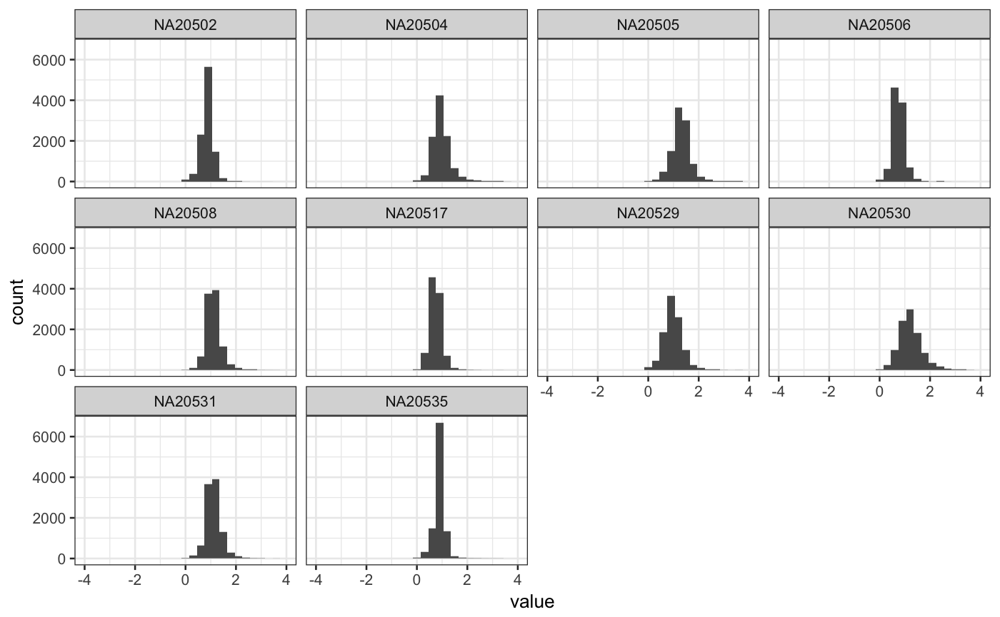

This function check the median ratio normalization used by DESeq2 and similarly by edgeR to visualy check whether the median is the best size factor to represent depth.
degCheckFactors(counts)
| counts | Matrix with counts for each samples and each gene. row number should be the same length than pvalues vector. |
|---|
ggplot2 object
This function will plot the gene ratios for each sample. To calculate the ratios, it follows the simliar logic than DESeq2/edgeR uses, where the expression of each gene is divided by the mean expression of that gene. The distribution of the ratios should approximate to a normal shape and the factors should be similar to the median of distributions. If some samples show different distribution, the factor may be bias due to some biological or technical factor.
#>#> Warning: Removed 87 rows containing non-finite values (stat_bin).